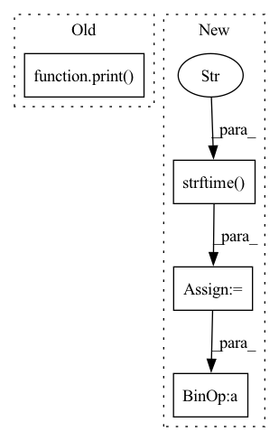

Pattern ID :27222

Before Change
def on_train_begin(self, logs=None):
if self.verbose:
print("Start Training".center(40, "="))
def on_epoch_begin(self, global_step=None, epoch=None, logs=None):
if self.verbose:
time_start = datetime.now().strftime("%Y-%m-%d %H:%M:%S")
After Change
def on_train_begin(self, logs=None):
if self.verbose:
time_start = datetime.now().strftime("%Y-%m-%d %H:%M:%S")
print("%s - Start Training" % (time_start))
def on_epoch_begin(self, global_step=None, epoch=None, logs=None):
if self.verbose:
In pattern: SUPERPATTERN
Frequency: 3
Non-data size: 4
Instances
Fragment ID: 80880337
Project Name: tongjilibo/torch4keras
Commit Name: 683300b91e566fad0c7f12413fda6a676a9b66fe
Time: 2022-11-04
Author: lb@libos-MacBook-Pro.local
File Name: torch4keras/snippets.py
M Class Name: ProgbarLogger
N Class Name: ProgbarLogger
M Method Name: on_train_begin(2)
N Method Name: on_train_begin(2)
M Parent Class: Callback
N Parent Class: Callback
M File Name: torch4keras/snippets.py
N File Name: torch4keras/snippets.py
M Start Line: 236
M End Line: 236
N Start Line: 236
N End Line: 237
'>
Before Change
print("Found " + str(file_count) + " images in " + dir)
print("Successfully read metadata from " + str(file_metadata_count) + " images.")
print("Created gallery.html and gallery_prompts.txt in " + os.getcwd() + "\n")
html.cleanup()
prompts.cleanup()
After Change
cwd = os.getcwd().replace("\\utils", "") + "\\prompts\\generated\\"
Path(cwd).mkdir(parents=True, exist_ok=True)
fn = "gallery_prompts_" + str(date.today()) + "_" + time.strftime("%H-%M-%S") + ".txt"
html = Html("gallery.html", cwd + fn)
prompts = PromptFile(cwd, fn, opt)
for f in files:
'>
Fragment ID: 80880359
Project Name: rbbrdckybk/ai-art-generator
Commit Name: 0c9de43f062a9fb62ef55e7d410af55566edf1a4
Time: 2022-09-01
Author: 80607958+rbbrdckybk@users.noreply.github.com
File Name: utils/metadata_gallery.py
M Class Name: AnonimousClass
N Class Name: AnonimousClass
M Method Name: make_gallery(2)
N Method Name: make_gallery(1)
M Parent Class:
N Parent Class:
M File Name: utils/metadata_gallery.py
N File Name: utils/metadata_gallery.py
M Start Line: 181
M End Line: 296
N Start Line: 310
N End Line: 438
'>
Before Change
def on_train_end(self, logs=None):
if self.verbose:
print("Finish Training".center(40, "="))
class EarlyStopping(Callback):
"""Stop training策略, 从keras中移植
After Change
def on_train_end(self, logs=None):
if self.verbose:
time_start = datetime.now().strftime("%Y-%m-%d %H:%M:%S")
print("%s - Finish Training" % (time_start))
class EarlyStopping(Callback):
'>
Fragment ID: 80880346
Project Name: tongjilibo/torch4keras
Commit Name: 683300b91e566fad0c7f12413fda6a676a9b66fe
Time: 2022-11-04
Author: lb@libos-MacBook-Pro.local
File Name: torch4keras/snippets.py
M Class Name: ProgbarLogger
N Class Name: ProgbarLogger
M Method Name: on_train_end(2)
N Method Name: on_train_end(2)
M Parent Class: Callback
N Parent Class: Callback
M File Name: torch4keras/snippets.py
N File Name: torch4keras/snippets.py
M Start Line: 272
M End Line: 272
N Start Line: 273
N End Line: 274